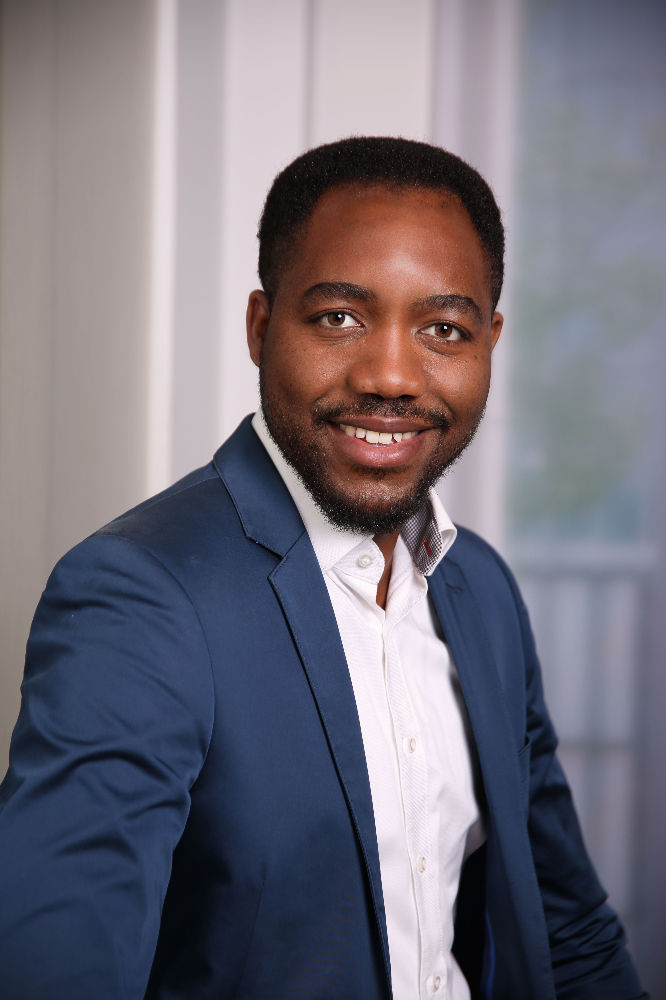

Welcome to my Resume Page 
Vital Nsengiyumva
Summary
Passionate about helping people achieve their goals through serving. Currently serving as Founder & CEO at eQuip MAGU and at proMX AG as a Project Manager.
Education
-
M.Sc: Environment & Process Engineering: University of Stuttgart (2015 - 2017)
-
Online MBA from Haroun Education Venturs (2019 - 2020)
-
B.Sc: Civil Engineering - Major in Water and Environmetal Engineering: University of Rwanda (2011 - 2014)
Work Experience
-
Founder & CEO at eQuip-Magu gUG (Haftung Beschränkte) : Since 2022 -Current
-
IT Project Manager at proMX AG : 2021 - Current: Responsible for D365 and Power Platform Projects Implemetaion including but not limited to
Requirements Gathering
Requirements Analysis
Project Planning
Project execution
Project Monitoring and control
- Project Bottomline maximization
-
Project Manager at Lipp GmbH : 2018 - 2021: Responsible for the implementation of French speaking Customer Projects
Skills
Leadership
Project Management
Organization Skills
Communication Management
Stakeholder Engagement
Project Scheduling
Project Budgeting
Project Risk Management
Project Quality Assurance
Benefit Analysis
Negociation
Certifications
PL-100 : Microsoft Certified: Power Platform App Maker Associate
MB-910 : Microsoft Certified: Dynamics 365 Fundamentals (CRM)

Volunteering
Board Member at Compassion Deutschland
Contact Me